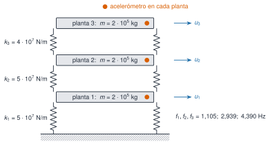

M2 · Sesión S2 · una clase de 4 horas
¿Qué frecuencias y amortiguamientos tiene un edificio y cómo se reconocen en un registro de aceleración?
Tres herramientas:
Material completo: matematicado
| Bloque | Tiempo |
|---|---|
| 0 · Un edificio de respuesta conocida | 10 min |
| M2.1 · Modos | 60 min |
| Pausa | 10 min |
| M2.2 · Polos y FRF | 50 min |
| Pausa | 10 min |
| M2.3 · Muestreo, DFT y fuga | 60 min |
| M2.4 · El edificio en frecuencia | 40 min |

\[\mathbf M\ddot{\mathbf u}+\mathbf C\dot{\mathbf u}+\mathbf K\mathbf u=\mathbf f(t)\]
Sin amortiguamiento ni fuerza, con \(\mathbf u=\boldsymbol\varphi\,e^{\mathrm i\omega t}\):
\[\left(\mathbf K-\omega^2\mathbf M\right)\boldsymbol\varphi=\mathbf 0\]
Problema de valores propios generalizado: \(\lambda=\omega^2\) y las formas modales \(\boldsymbol\varphi\).
\(\mathbf M\) y \(\mathbf K\) son simétricas y definidas positivas (energías cinética y elástica > 0), así que:
Normalizadas a masa unidad:
\[\boldsymbol\Phi^{\mathsf T}\mathbf M\boldsymbol\Phi=\mathbf I,\qquad \boldsymbol\Phi^{\mathsf T}\mathbf K\boldsymbol\Phi=\operatorname{diag}(\omega_j^2)\]
Con \(\mathbf u=\boldsymbol\Phi\mathbf q\), tres osciladores independientes.
Edificio A: \(f=1{,}105\); \(2{,}939\); \(4{,}390\) Hz.
\[\mathrm{MAC}(\mathbf a,\mathbf b)=\frac{\lvert\mathbf a^{\mathsf T}\mathbf b\rvert^2}{(\mathbf a^{\mathsf T}\mathbf a)(\mathbf b^{\mathsf T}\mathbf b)}\in[0,1]\]
De A a C: las frecuencias bajan un 1,8 %, un 0,2 % y un 3,1 %, y el MAC > 0,999.
Las frecuencias son mucho más sensibles al daño que las formas.
Abrir la simulación en la página
\[\mathbf H(s)=\left(\mathbf Ms^2+\mathbf Cs+\mathbf K\right)^{-1}\]
\[s_k=-\zeta_k\omega_k\pm\mathrm i\,\omega_k\sqrt{1-\zeta_k^2}\]
\[\omega_k=\lvert s_k\rvert,\qquad \zeta_k=-\frac{\operatorname{Re}s_k}{\lvert s_k\rvert}\]
\[H_{ij}(\mathrm i\omega)=\sum_{k}\frac{\varphi_{ik}\,\varphi_{jk}}{\omega_k^2-\omega^2+2\mathrm i\,\zeta_k\omega_k\omega}\]
Abrir la simulación en la página
\[z=e^{s\Delta t}:\quad \lvert z\rvert=e^{-\zeta\omega\Delta t},\quad \arg z=\omega_{\mathrm d}\Delta t\]
\[X_k=\sum_{n=0}^{N-1}x_n\,e^{-\mathrm i2\pi kn/N},\qquad \Delta f=\frac{f_{\mathrm s}}{N}=\frac{1}{T}\]
Abrir la simulación en la página
Welch con segmentos de 5 s y de 82 s (figura en la página):
| Herramienta | Pregunta |
|---|---|
| Toeplitz y Hankel (A1) | ¿De qué matrices parten ERA y SSI? |
| SVD (A3) | ¿Cuántas componentes independientes hay? |
| Espacio de estados (S2) | ¿Qué ve cada sensor? |
| Transformada Z (S3) | ¿Polos de un modelo AR? |
| Hilbert (F2) | ¿Amortiguamiento de la envolvente? |
| Estocásticos y correlación (P1, P2) | ¿Modos sin medir la excitación? |